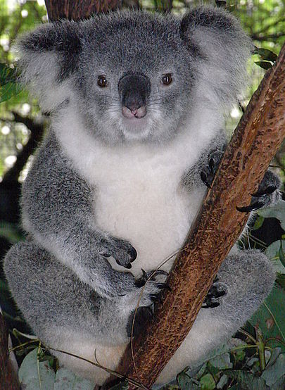

ბამბუკის დათვი, დიდი პანდა (ლათ. Ailuropoda melanoleuca) — ძუძუმწოვარი ცხოველი დათვისებრთა ოჯახისა, რომელიც მსოფლიოს იშვიათი ცხოველების რიცხვს მიეკუთვნება. სხეულის სიგრძე 1,5 მ-მდეა, წონა 100 კგ-მდე. აქვს თეთრი ბალანი ყურებზე, ფეხებზე, კუდის წვერზე და მხრების მიდამოებში კი - შავი. ძირითადი კბილები მძლავრი და ბლაგვია.მხოლოდ პანდასთვის არის დამახასიათებელი წინა კიდურებზე დიდი ზომის ცერი. ეს არის მაჯის განსაკუთრებული ძვალი, რომელიც დაფარულია სქელი ბეწვით და ეხმარება ცხოველს კვების დროს.

გიგანტური პანდა მიეკუთვნება მცენარეჭამია ცხოველებს. მისი საყვარელი საჭმელია ბამბუკის ფოთლები, ასევე, ტოტები, ყლორტები და ფესვები. პანდა იკვებება ჩაცუცქულ მდგომარეობაში, ტოტების მოტეხაში კი მისი განსაკუთრებული ცერა ეხმარება. გიგანტური პანდების უმრავლესობა, დაახლოებით, 16 საათს კვებას უთმობს. მას დიდი რაოდენობით საკვები სჭირდება დასანაყრებლად. მოზრდილ პანდას დღეში 10-20 კოლოგრამი ბამბუკი სჭირდება, ზოგჯერ მეტიც. თუ სხვა ცხოველი მიღებული საკვების 80 პროცენტს ინელებს, პანდა ინელებს მხოლოდ 17 პროცენტს.
ვრცლადჩანთოსანი დათვი, კოალა (ლათ. Phascolarctos cinereus) — ძუძუმწოვარი ცხოველი ჩანთოსნების რიგისა. გარეგნულად დათვს ჰგავს (აქედანაა მისი სახელიც). მისი სხეული სიგრძე 82 სმ (კუდი არ მოუჩანს), მასა 16 კგ აღწევს. ფერად რუხია. გავრცელებულია ავსტრალიაში. ცხოვრობს ტყეში, ბინადრობს ხეზე.
 დამატებითი ფოტოებიიკვებება ფოთლებით. მრავლდება სექტემბრიდან მაისამდე. მაკეობა 30 დღეღამე გრძელდება. შობს 1 ნაშიერს, რომელიც ჩანთაში რჩება 6 თვემდე. იყენებენ მის ბეწვს. ამჟამად ჩანთოსან დათვებზე ნადირობა აკრძალულია.